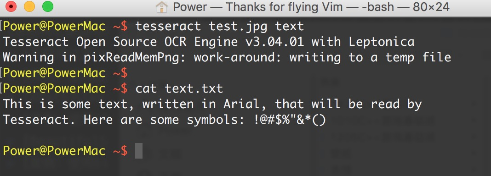
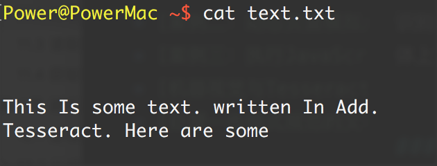
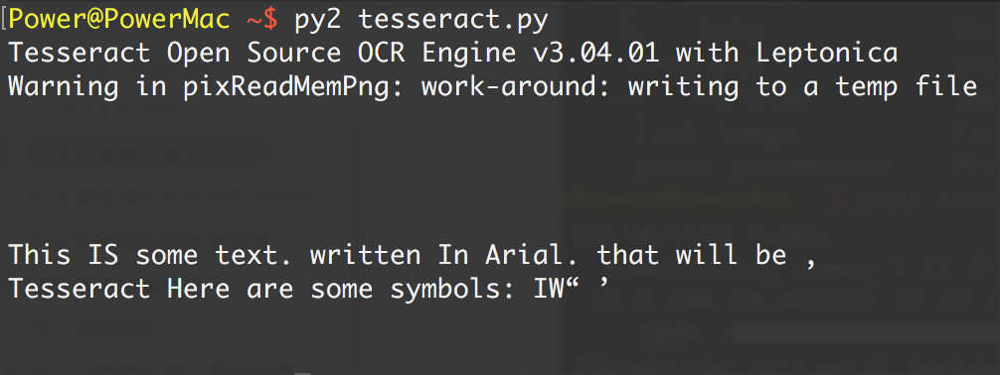

处理给规范的文字
处理的大多数文字最好都是比较干净、格式规范的。格式规范的文字通常可以满足一些需求，通常格式规范的文字具有以下特点:
- 使用一个标准字体(不包含手写体、草书,或者十分“花哨的”字体)
- 即使被复印或拍照，字体还是很清晰，没有多余的痕迹或污点
- 排列整齐，没有歪歪斜斜的字
- 没有超出图片范围，也没有残缺不全，或紧紧贴在图片的边缘
文字的一些格式问题在图片预处理时可以进行解决。例如,可以把图片转换成灰度图，调整亮度和对比度，还可以根据需要进行裁剪和旋转（详情需要了解图像与信号处理）等。
格式规范文字的理想示例

通过下面的命令运行 Tesseract，读取文件并把结果写到一个文本文件中: tesseract test.jpg text

cat text.txt 即可显示结果。
识别结果很准确,不过符号^和*分别被表示成了双引号和单引号。大体上可以让你很舒服地阅读。
通过Python代码实现
import pytesseract
from PIL import Image
image = Image.open('test.jpg')
text = pytesseract.image_to_string(image)
print text
运行结果：
This is some text, written in Arial, that will be read by
Tesseract. Here are some symbols: !@#$%"&*()
对图片进行阈值过滤和降噪处理（了解即可）
很多时候我们在网上会看到这样的图片：
Tesseract 不能完整处理这个图片,主要是因为图片背景色是渐变的,最终结果是这样:

随着背景色从左到右不断加深,文字变得越来越难以识别,Tesseract 识别出的 每一行的最后几个字符都是错的。
遇到这类问题,可以先用 Python 脚本对图片进行清理。利用 PIL 库,我们可以创建一个阈值过滤器来去掉渐变的背景色，只把文字留下来，从而让图片更加清晰，便于 Tesseract 读取:
from PIL import Image
import subprocess
def cleanFile(filePath, newFilePath):
image = Image.open(filePath)
# 对图片进行阈值过滤（低于143的置为黑色，否则为白色）
image = image.point(lambda x: 0 if x < 143 else 255)
# 重新保存图片
image.save(newFilePath)
# 调用系统的tesseract命令对图片进行OCR识别
subprocess.call(["tesseract", newFilePath, "output"])
# 打开文件读取结果
with open("output.txt", 'r') as f:
print(f.read())
if __name__ == "__main__":
cleanFile("text2.png", "text2clean.png")
通过一个阈值对前面的“模糊”图片进行过滤的结果
除了一些标点符号不太清晰或丢失了,大部分文字都被读出来了。Tesseract 给出了最好的 结果:

从网站图片中抓取文字
用 Tesseract 读取硬盘里图片上的文字,可能不怎么令人兴奋,但当我们把它和网络爬虫组合使用时,就能成为一个强大的工具。
网站上的图片可能并不是故意把文字做得很花哨 (就像餐馆菜单的 JPG 图片上的艺术字),但它们上面的文字对网络爬虫来说就是隐藏起来 了，举个例子：
虽然亚马逊的 robots.txt 文件允许抓取网站的产品页面,但是图书的预览页通常不让网络机 器人采集。
图书的预览页是通过用户触发 Ajax 脚本进行加载的,预览图片隐藏在 div 节点 下面;其实,普通的访问者会觉得它们看起来更像是一个 Flash 动画,而不是一个图片文 件。当然,即使我们能获得图片,要把它们读成文字也没那么简单。
下面的程序就解决了这个问题:首先导航到托尔斯泰的《战争与和平》的大字号印刷版 1, 打开阅读器,收集图片的 URL 链接,然后下载图片,识别图片,最后打印每个图片的文 字。因为这个程序很复杂,利用了前面几章的多个程序片段,所以我增加了一些注释以让 每段代码的目的更加清晰:
import time
from urllib.request import urlretrieve
import subprocess
from selenium import webdriver
#创建新的Selenium driver
driver = webdriver.PhantomJS()
# 用Selenium试试Firefox浏览器:
# driver = webdriver.Firefox()
driver.get("http://www.amazon.com/War-Peace-Leo-Nikolayevich-Tolstoy/dp/1427030200")
# 单击图书预览按钮 driver.find_element_by_id("sitbLogoImg").click() imageList = set()
# 等待页面加载完成
time.sleep(5)
# 当向右箭头可以点击时,开始翻页
while "pointer" in driver.find_element_by_id("sitbReaderRightPageTurner").get_attribute("style"):
driver.find_element_by_id("sitbReaderRightPageTurner").click()
time.sleep(2)
# 获取已加载的新页面(一次可以加载多个页面,但是重复的页面不能加载到集合中)
pages = driver.find_elements_by_xpath("//div[@class='pageImage']/div/img")
for page in pages:
image = page.get_attribute("src")
imageList.add(image)
driver.quit()
# 用Tesseract处理我们收集的图片URL链接
for image in sorted(imageList):
# 保存图片
urlretrieve(image, "page.jpg")
p = subprocess.Popen(["tesseract", "page.jpg", "page"], stdout=subprocess.PIPE,stderr=subprocess.PIPE)
f = open("page.txt", "r")
p.wait() print(f.read())
和我们前面使用 Tesseract 读取的效果一样，这个程序也会完美地打印书中很多长长的段落，第六页的预览如下所示:
6
"A word of friendly advice, mon
cher. Be off as soon as you can,
that's all I have to tell you. Happy
he who has ears to hear. Good-by,
my dear fellow. Oh, by the by!" he
shouted through the doorway after
Pierre, "is it true that the countess
has fallen into the clutches of the
holy fathers of the Society of je-
sus?"
Pierre did not answer and left Ros-
topchin's room more sullen and an-
gry than he had ever before shown
himself.
但是当文字出现在彩色封面上时，结果就不那么完美了:
WEI' nrrd Peace
Len Nlkelayevldu Iolfluy
Readmg shmdd be ax
wlnvame asnossxble Wenfler
an mm m our cram: Llhvary
- Leo Tmsloy was a Russian rwovelwst
I and moval phflmopher med lur
A ms Ideas 01 nonviolenx reswslance m 5 We range 0, "and"
如果想把文字加工成普通人可以看懂的效果，还需要花很多时间去处理。
比如，通过给 Tesseract 提供大量已知的文字与图片映射集，经过训练 Tesseract 就可以“学会”识别同一种字体，而且可以达到极高的精确率和准确率，甚至可以忽略图片中文字的背景色和相对位置等问题。